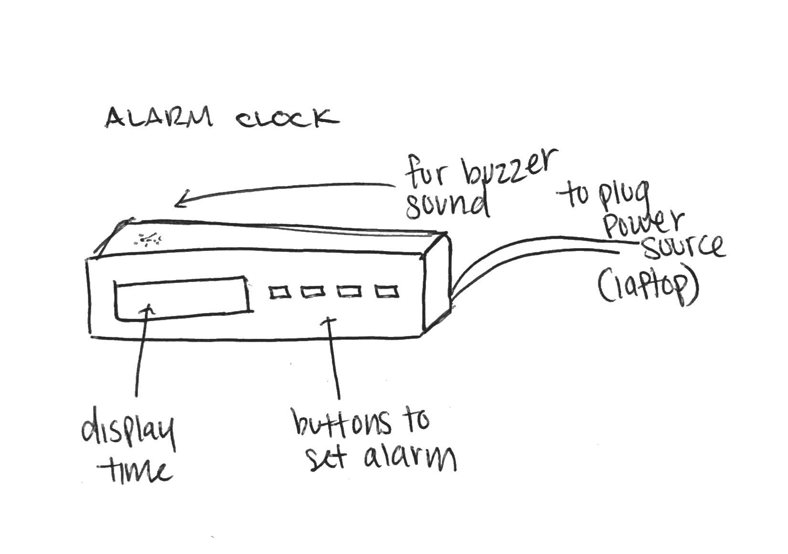
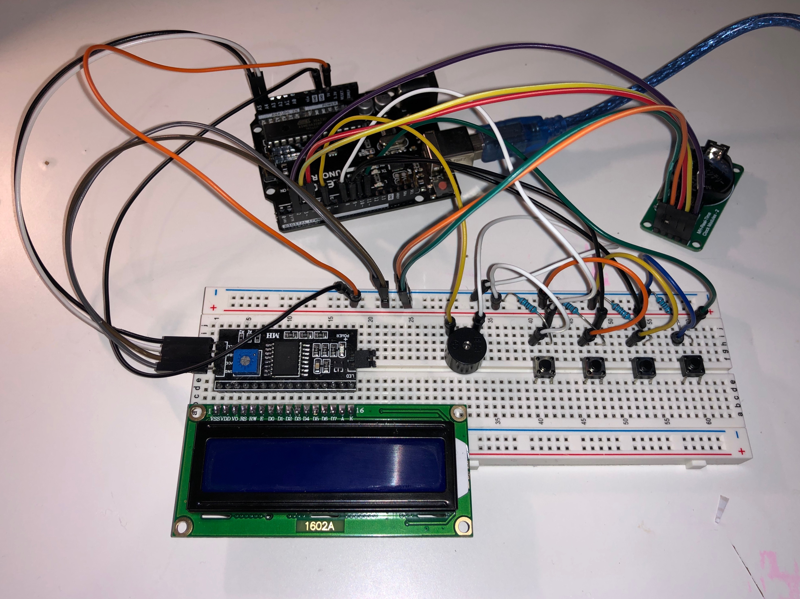
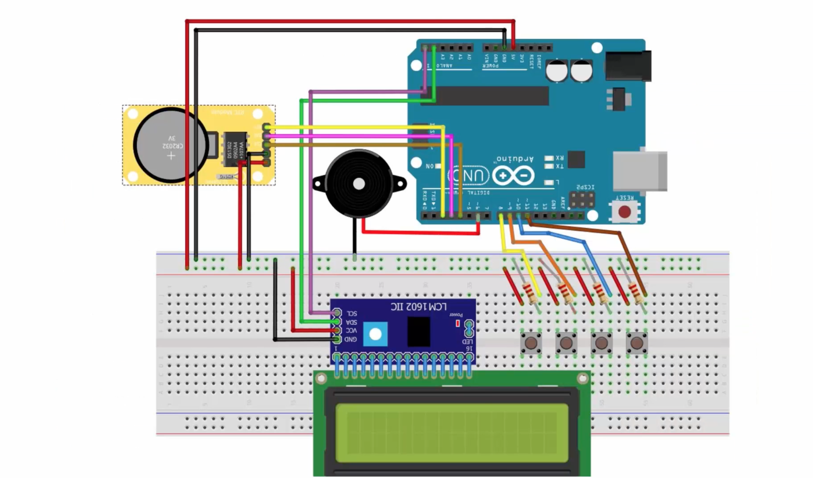
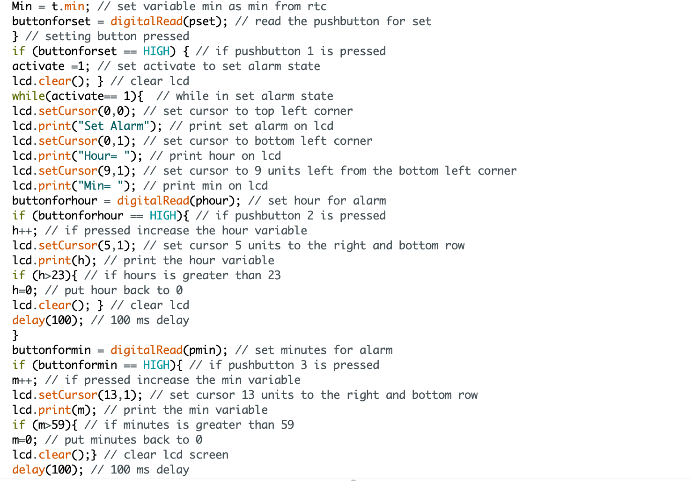
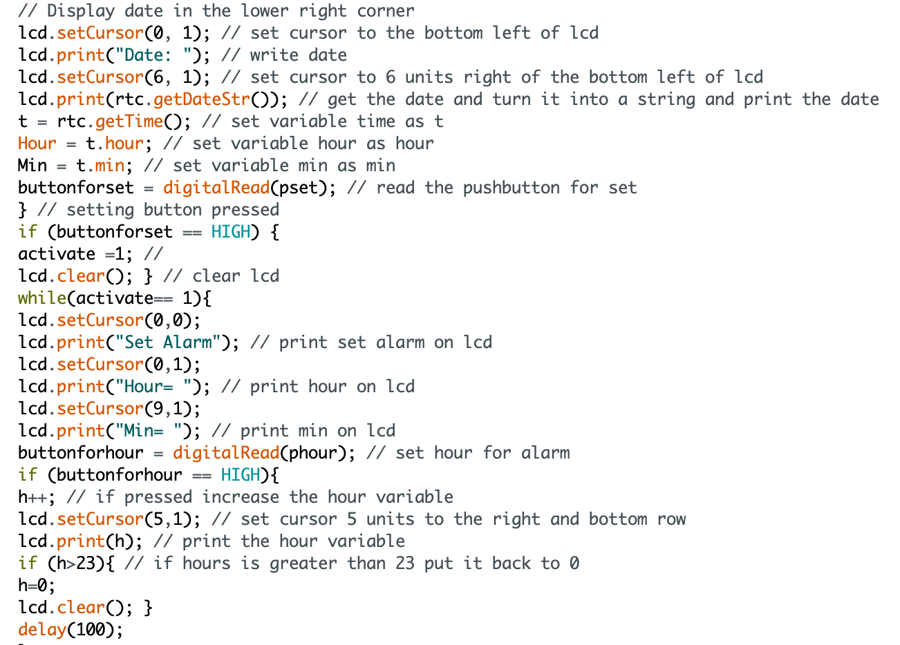

"In the final projects, we want to see you integrate different skills you learn throughout the class. Your project needs to take some input and connect that to some output through digital logic. Your projects needs to be integrated into a prototype (so it cannot just be a breadboard on the table!)"
For my final project, I made ana alarm clock using the arduino. The current time and date will be set using the code while alarm can be set using pushbuttons as input. It is connected to the buzzer which acts as the output through digital logic. My prototype is encased in a cardboard box to hide all wiring.
Initial sketches of my alarm clock idea

To bring this project together, I used the following list of materials:
1. Arduino
2. Real time clock module (DS1302)
3. Piezo Buzzer
4. LCD Display 16x2
5. I2C module
6. Four pushbuttons
7. Four 1K ohm resistors
8. Jumper wires
9. Breaboard
Circuit diagram

The circuit diagram is shown above where the LCD display is connected with the I2C module that connects to ground and power and pins A4 and A5. The real time clock module is connected to pins 2,3, and 4. The pushbuttons (input) are connected to 1k ohm resistors to fully ground the circuit when they are plugged into pins 8-11 on the arduino. The buzzer (output) is connected to pin 6.
Schematic

The circuit diagram connections are shown above, which was made through the fritzing application.
Alarm Clock Video Demo
Alarm Clock Code Snippet


The snippet above is the code that is programmed into the browser to take serial values from the arduino and display them on the screen. The code also shows the code to communicate key pressed values to the arduino to change the LED brightness.